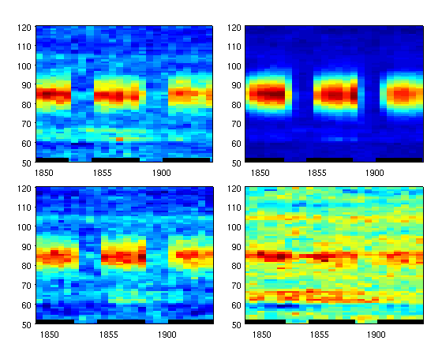
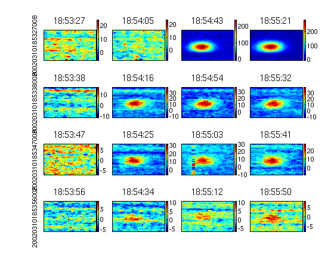
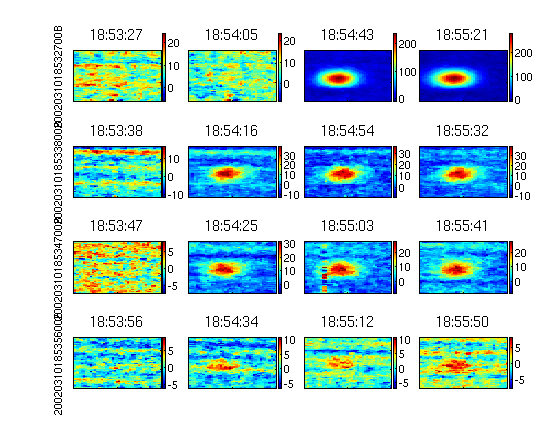

Basic image plots and such
Contents
Simple analysis of time sequence of ALIS data
% Here we will go through the use of % * IMGS_REGS_MMMM - for max mean median and min in regions of % images. % * IMGS_KEOGRAMS - for making keograms along several lines and % columns through images. % * IMGS_MOVIE_R - for making animations/movies of region in images % * IMGS_PLOT - display a region for some selected iamges. % * IMGS_PLOT_BG_RED display a region for some selected iamges, now % with background reduction. % * IMGS_KEOGRAMS_R3 - make keograms from the projected image % coordoinates of a set of points/line.
Set up of input parameters et al
% Moving there just to load some files... cd /alis/stdnames/2002/03/10 q = dir('17/*B.fits'); files0310 = [repmat('17/',[size(q,1) 1]),str2mat(q(:).name)]; q = dir('18/*B.fits'); files0310 = [files0310;repmat('18/',[size(q,1) 1]),str2mat(q(:).name)]; q = dir('19/*B.fits'); files0310 = [files0310;repmat('19/',[size(q,1) 1]),str2mat(q(:).name)]; q = dir('20/*B.fits'); files0310 = [files0310;repmat('20/',[size(q,1) 1]),str2mat(q(:).name)]; load S010_S10_191827_0.acc
Make default preprocessing options
PO = typical_pre_proc_ops;
Setting outimgsize is some kind of insurance against not crashing the analysis if there suddenly are an image with different size. For this data-set all images should already be 256x256. Then this takes n o extra time.
PO.outimgsize = 256;
If we know wether to use LE or BE this makes the loading of images more than twice as fast.
PO.LE = 1;
For this data set there is severe problems with interference so we have to remove that these lines in the fft.
PO.v_interf_notches = [9 10 11 12 13 20 21 22];
In order to avoid the problems with ripples from bright stars we should remove them before the interference reduction
load /home/bjorn/matlab/Skymap/stars/Ybs.bjg
Here we select all stars brighter than magnitude 2
is = find(Ybs(:,end-1)<2);
PO.remove_these_stars = [ Ybs(is,1)+Ybs(is,2)/60+Ybs(is,3)/3600 ...
Ybs(is,4)+Ybs(is,5)/60+Ybs(is,6)/3600];
PO.optpar = S010_S10_191827_0([7:14 6 end]);
IMGS_REGS_MMMM
This function makes basic statistics (mmmm stands for max, mean, median and min - note: alphabetical order, well almost) on regions in a series of images. Here we select the regions:
regs = [140 180 60 115
120 139 60 115
181 200 60 115
140 180 116 130];
and this is how to call the function
[I_max,I_mean,I_median,I_min,Tr_time,expt,filters] = ...
imgs_regs_mmmm(files0310(450:550,:),regs,[],PO);
For this period we had a minor bug in ALIS. The time recorded in DATE-OBS was at the end of the exposure, this we fix here
Tr_time = Tr_time-expt/3600000; % Exposure time "expt" in ms
Further these functions returns time as hour of the month. This makes less problematic with the wraparound at midnight. But very confusing when it comes to combine with other data.
% To sort out the data for this kind of experiments where we do % quick filtrer-switching sequences we need to get the unique % filters. During the years we have had filters identified by CW % (A), filter position 0-6 and more recently very rigourusly with % filter position as well as CW (nm) and emission (nm). Fnr = unique(filters);
This is data from an experiment with EISCAT-Heating. The heater was turned on and off at these times:
t_hon = 18 + [48:6:60]/60; t_hoff = t_hon + 4/60;
Simple plotting cycle
for i = 1:length(Fnr), % Larger subplots than matlabs, less space for labels and % colorbars mysubplot(2,2,i), % Plot the difference between the "centre" region and the % background regions ph(1) = plot(rem(Tr_time(filters==Fnr(i)),24),I_max(filters==Fnr(i),1)-mean(I_max(filters==Fnr(i),2:end),2)); hold on ph(2) = plot(rem(Tr_time(filters==Fnr(i)),24),I_mean(filters==Fnr(i),1)-mean(I_mean(filters==Fnr(i),2:end),2),'r'); ph(3) = plot(rem(Tr_time(filters==Fnr(i)),24),I_median(filters==Fnr(i),1)-mean(I_median(filters==Fnr(i),2:end),2),'g'); % This set the ticklables to time format timetick % Make the lines fatter set(ph,'linewidth',2) % Add a legend with explaining text legend(ph,'I\_max','I\_mean','I\_median') % Get the current axis ax = axis; % so we can mark the periods when Heating transmitts h = heateronoff(ax(3)+.5,t_hon,t_hoff); % Add grid marks grid on end

IMGS_KEOGRAMS
% Simple keogram with cuts just along columns
kolmns = [140,160,180,90,120];
or lines, here we select lines for keograms at #90 and #120
lines_no_columns = [ 0, 0, 0, 1, 1];
[k140,k160,k180,l90,l120,exptimes,tstrs] = ...
imgs_keograms(files0310(450:550,:),kolmns,lines_no_columns,PO.optpar,PO);
And a loop for showing the results
clf for i = 1:length(Fnr), mysubplot(2,2,i) pcolor(rem(Tr_time(filters==Fnr(i)),24),50:120,k160(filters==Fnr(i),50:120)'- ... k140(filters==Fnr(i),50:120)'/2-k180(filters==Fnr(i),50:120)'/2), % We should _ALWAYS_ use flat shading. shading flat timetick ax = axis; h = heateronoff(ax(3)+.5,t_hon,t_hoff); end
clf for i = 1:length(Fnr), mysubplot(2,2,i) pcolor(rem(Tr_time(filters==Fnr(i)),24),130:180,l90(filters==Fnr(i),130:180)'- ... l120(filters==Fnr(i),130:180)') % We should _ALWAYS_ use flat shading. It is even worth % mentioning twice shading flat timetick ax = axis; h = heateronoff(ax(3)+.5,t_hon,t_hoff); end

IMGS_MOVIE_R
clf [M,Tstrs,caxout,exptimes] = imgs_movie_r(files0310(450:550,:),regs(1,:),'auto',PO.optpar,PO); % It is good to use the (filters==Fnr(indx)) construct to select % frames images, point in time series. Even if an experiment is % sceduled to make a regular filter sequence - the cycle is sure to % be broken somewhere. % So showing the individual movies for each filter %movie(gcf,M(filters==Fnr(1)),1,3) %disp('Push any button') %pause %movie(gcf,M(filters==Fnr(2)),1,3) %disp('Push any button') %pause %movie(gcf,M(filters==Fnr(3)),1,3) %disp('Push any button') %pause %movie(gcf,M(filters==Fnr(4)),1,3) %disp('Push any button') %pause

IMGS_PLOT
% Simple plot of images or region in images in same figure subplot style: clf cax = imgs_plot(files0310(31+[450:4:462],:),PO,4,1,4,1,regs(1,:),[],[],'auto','cax'); cax = imgs_plot(files0310(32+[450:4:462],:),PO,4,2,4,1,regs(1,:),[],[],'auto','cax'); cax = imgs_plot(files0310(33+[450:4:462],:),PO,4,3,4,1,regs(1,:),[],[],'auto','cax'); cax = imgs_plot(files0310(34+[450:4:462],:),PO,4,4,4,1,regs(1,:),[],[],'auto','cax');

IMGS_PLOT_BG_RED
% Plot of images now with linear background reduction between first % image in files, otherwise as above: clf cax5 = imgs_plot_bg_red(files0310(34+[446:4:462 482],:),PO,4,4,4,1,regs(1,:),[],[],'','cax'); cax4 = imgs_plot_bg_red(files0310(33+[446:4:462 482],:),PO,4,3,4,1,regs(1,:),[],[],'','cax'); cax0 = imgs_plot_bg_red(files0310(32+[446:4:462 482],:),PO,4,2,4,1,regs(1,:),[],[],'','cax'); cax1 = imgs_plot_bg_red(files0310(31+[490 450 454 458 462 490],:),PO,4,1,4,1,regs(1,:),[],[],'','cax');
The "cax" argument makes it possible to improve the scaling in cases there are pixels intensities far outside the interesting range
cax4(3,:) = cax4(4,:);
cax4 = imgs_plot_bg_red(files0310(33+[446:4:462 482],:),PO,4,3,4,1,regs(1,:),[],[],cax4,'cax');
 IMGS_KEOGRAMS_R3
Byt tex till 19990216
e_mag = [0 -sin(13*pi/180) cos(13*pi/180)]; r_bas = [-50 170 180] l = 0:2:100;
r_bas = -50 170 180
This function is very sensitive to orientation of the input arrays. Usually I have to transpose them a few times before I get it right. That is an annoyance but no serious problem...
r_mag = point_on_line2(r_bas,e_mag',l); rs = [-2 168 0]; % Byt tex till 19990216 [Keo,exptimes,Tstrs,filters] = imgs_keograms_r3(files0310(450:550,:),rs,r_mag,PO.optpar,PO); clf for i = 1:4, subplot(2,2,i) imagesc(Keo(filters==Fnr(i),:)') end